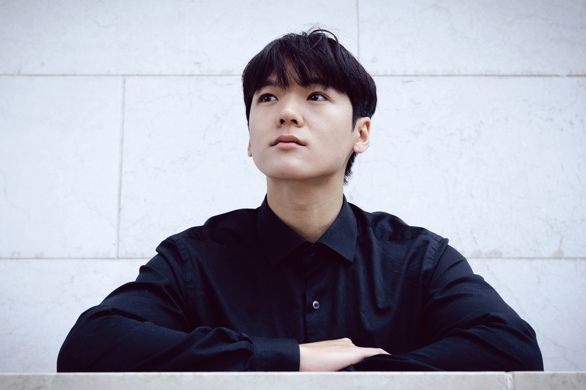
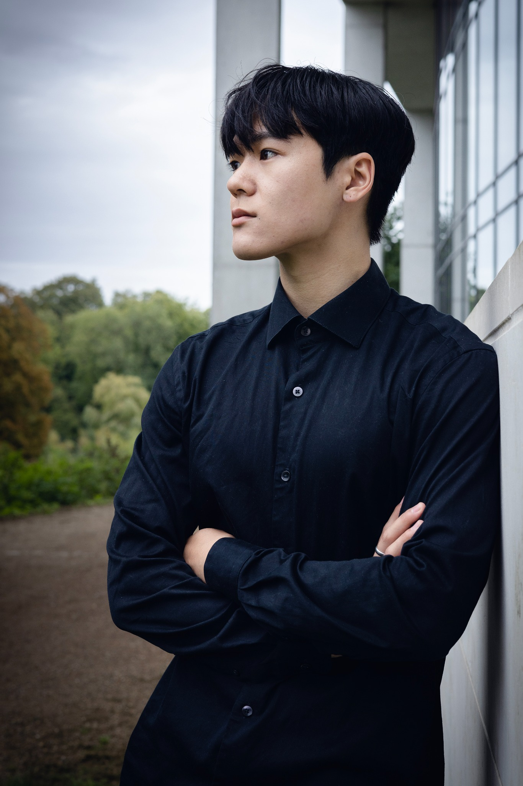
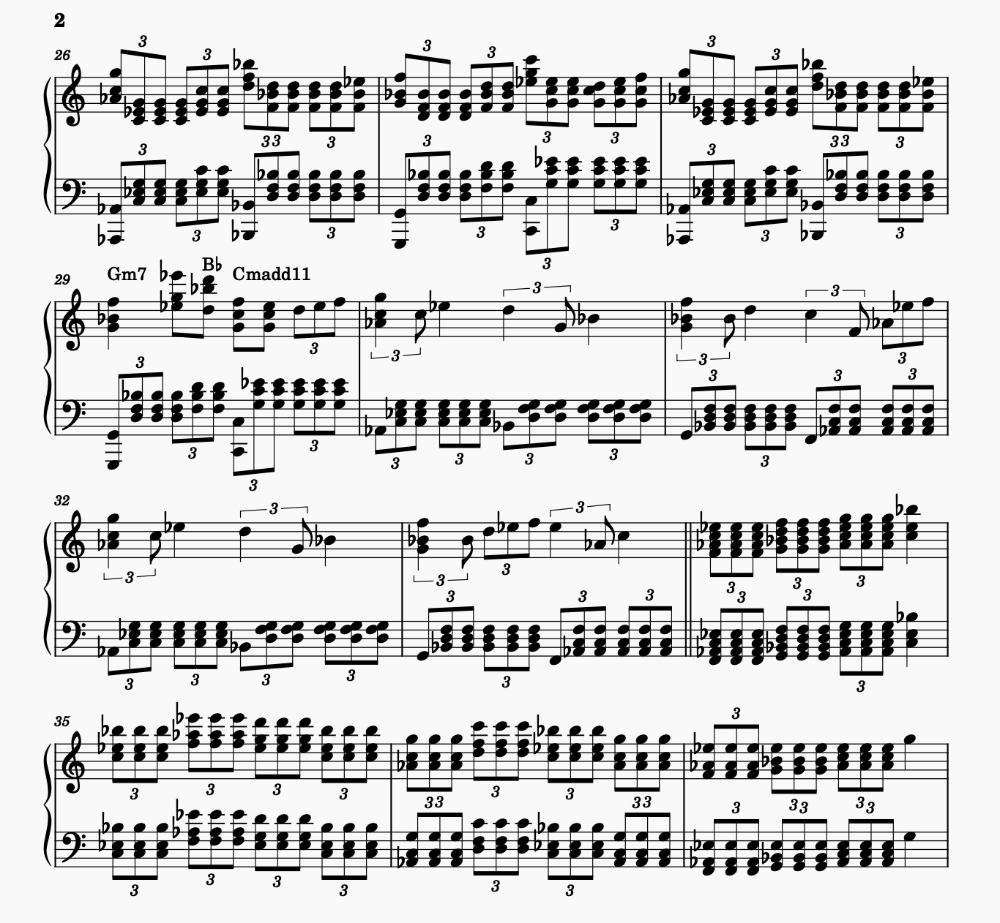
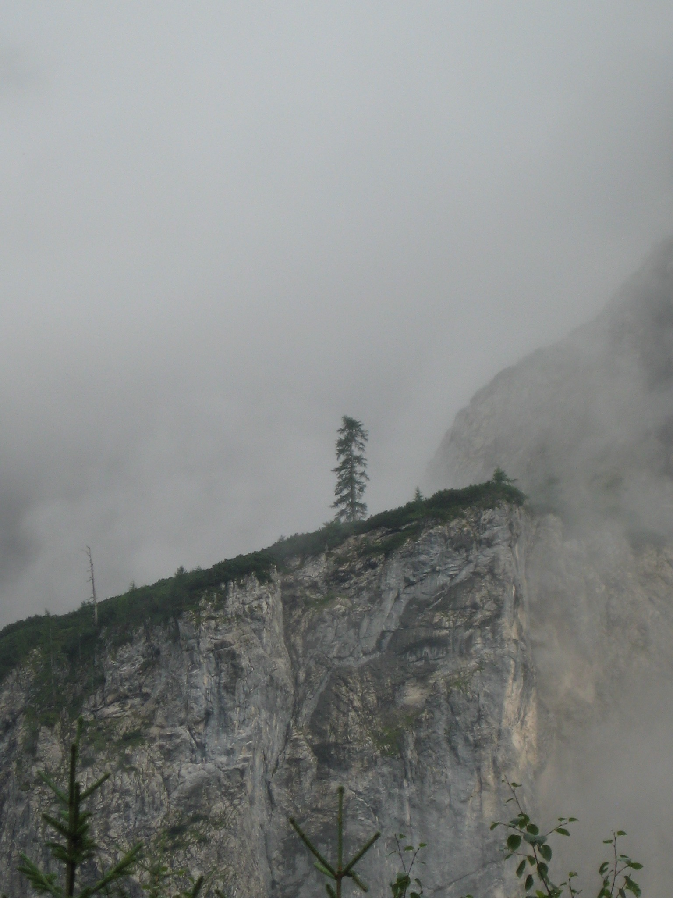

Composer · Pianist · Producer
Original music & personal work

01 / Recorded music
Small worlds,
in sound.
A collection of original releases.
Written, played and produced by me.
Listen on Spotify
Nagori (名残り)
02Dream Book
03Lycaenidae
04Hotaru
05The Moon and The Ocean
06
02 / A little about me
It started
at the piano.
I began playing classical piano at seven. It is still the place I return to.
Growing up in Denmark, national piano competitions and concerts led me to chamber music collaborations and music festivals. I continued my musical education at Det Kongelige Danske Musikkonservatorium and through the Jacob Gade talent programme.
My music grows from those classical roots: the poetry of Chopin, the colour of Debussy, and the worlds of Joe Hisaishi, Ryuichi Sakamoto and Ichiko Aoba. I compose my own pieces, record my performances, and program and produce each project in Logic Pro, from the first idea to the finished recording.
An interest in languages took me to Seoul, where I taught languages to children and discovered a passion for mathematics. Today, I am based in Copenhagen and study applied mathematics at Copenhagen Business School.
Robin Wohner
03 / Performance
At the piano.
A moment from the concert stage.

Robin Wohner / Live performanceWatch on YouTube
04 / From the notebook
Before the
recording.
The music begins here, with a page and a piano.
Tower Unreleased work


“I just find the concept of music
so much fun.”Robin Wohner
05 / Get in touch
Let’s make
something.
For film scores, musical collaborations,
and other projects.
Media